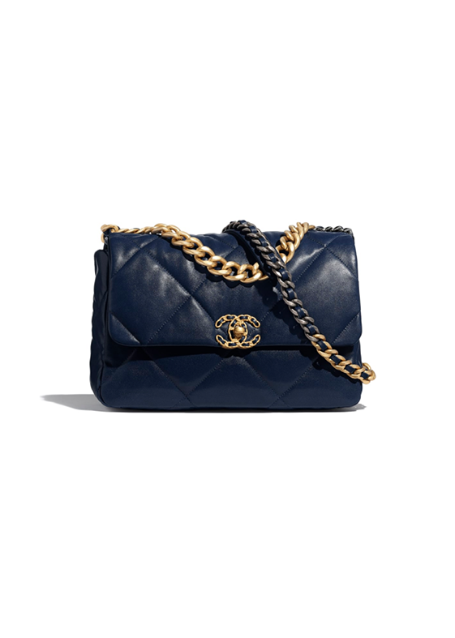

|

|
/Sling Bag
800k
Crafted from puffy lambskin, it presents the ruthenium-finish
brass 'Channel Icon' signature on the front.The interior enables easy
organization of a woman’s essentials because its multiple compartments.
With its graphic flap design and sleek shape, this bag gives off a modern feel.
30 Ulasan
50 Terjual
|